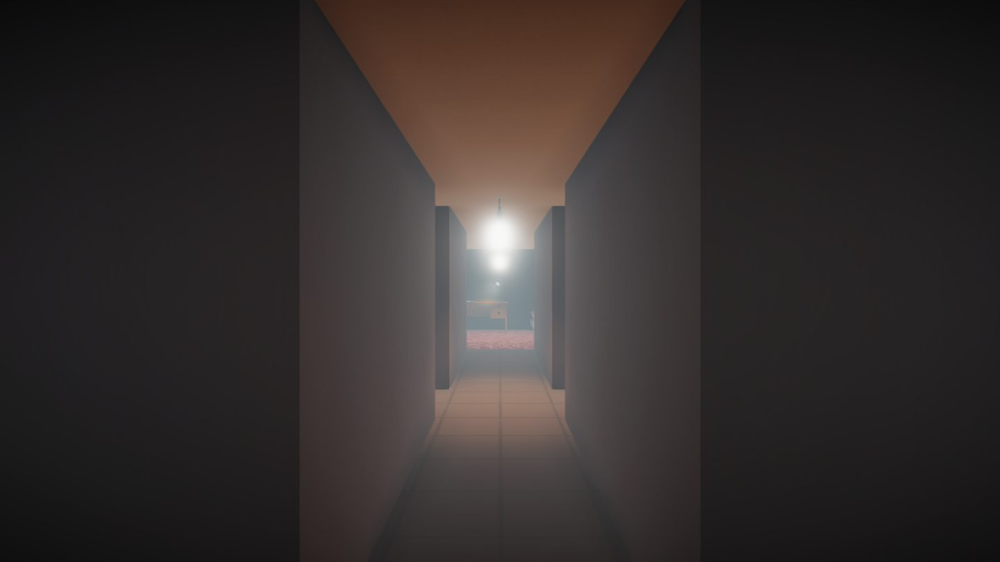

Slowly Strange
It's a normal day. Do your tasks! Everything is definitely as it should be, and nothing is off!
3D · HorrorWindows

Play Slowly Strange
Choose a platform below for the game and available downloads.
It's a normal day, do your tasks! Everything is definitely as it should be, and nothing is off!
Special thanks to u/mh06941 on reddit for the idea.
Note: This game is old and does not represent the quality of our studio's works as of
2023
© II Games